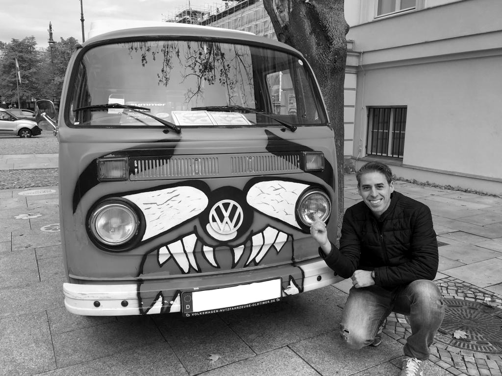

A few years ago, I took to drawing. It was an adventure for me that I took on late in life, and it’s something I’ve enjoyed since joining. I plan to continue doing it for as long as I possibly can. The passion for the automotive design keeps me sketching.
If you would like to know more, please visit my profil:
Car enthusiast based in Germany, I studied Chemistry at UGR and FSU. Subsequently worked at the majors automotive suppliers and conducted a number of projects working as a project engineer for a wide range of cars manufacturers worldwide.